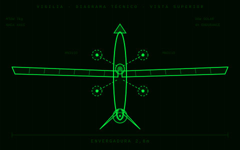

Corpo em fibra de carbono (CFRP) com núcleo em espuma Rohacell. Perfil aerodinâmico asa alta com longarina de carbono pultrudado. Envergadura: 2,8 m. MTOW: 7 kg. Coeficiente de sustentação (Cl): 1,4.
4 motores brushless T-Motor MN3110 (700 kV) em suportes recolhíveis de CFRP. Hélices 12×4,5. Usados exclusivamente em decolagem e pouso. Consumo total VTOL: 480 W.
Motor pusher traseiro T-Motor AT2317 para cruzeiro em voo de asa fixa. Hélice de passo variável 9×6. Velocidade de cruzeiro: 65 km/h. Consumo nominal: 55 W.
28 células fotovoltaicas SunPower C60 distribuídas nas asas (área ativa: 0,48 m²). Potência de pico: 96 W. Controlador MPPT Genasun GVB-8. Geração média diária (latitude 20° S): 410 Wh.
Pack LiPo 6S 10.000 mAh (Tattu R-Line). Tensão nominal: 22,2 V. Energia útil: 190 Wh. BMS integrado com balanceamento ativo. Temperatura operacional: −10 °C a 50 °C.
Controlador de voo Pixhawk 6C com ArduPlane 4.4. Transição VTOL→asa fixa em 8 s a 30 m AGL. Modos: Auto, Loiter, RTL, FBWA. GPS RTK Here3+ (precisão 2 cm). IMU redundante.
Telemetria RFD900x (915 MHz, alcance 40 km). Uplink de vídeo 5,8 GHz com encoder H.265. Módulo 4G LTE de backup (SIM A2). Antena direcional omnidirecional no solo.
Gimbal tri-eixo Gremsy T3 com câmera Sony IMX477 (12 MP). EO/IR opcional (FLIR Boson 640). Peso máximo de payload: 800 g. Interface CAN + USB-C para troca rápida.
Jetson Orin NX 16 GB para inferência embarcada em tempo real. Modelos: YOLOv8n (detecção de pessoas/veículos, 45 FPS), segmentação de rota, detecção de anomalias térmicas. Edge inference sem conexão cloud.
Software Mission Planner + overlay customizado VigilIA-HUD. Mapa offline OpenStreetMap. Planejamento de missão por polígono. Log automático em SQLite. Dashboard web em React para visualização histórica.
| Fonte | Potência (W) | Energia/dia (Wh) | Consumidor | Balanço |
|---|---|---|---|---|
| Painel Solar | 96 | 410 | Sistema total | + |
| Bateria (descarga) | 220 | 190 | VTOL + cruzeiro | − |
| Cruzeiro (pusher) | 55 | 275 | Motor pusher | − |
| Aviônica + comms | 22 | 110 | Pixhawk + RFD + Jetson | − |
| Payload câmera | 18 | 90 | Gimbal + IMX477 | − |
| Saldo diário (sol 4,5h) | — | −265 | Recarga necessária | △ |
Motor brushless VTOL 700 kV. Origem: China. Torque máx: 0,45 N·m. Preço unit.: ~R$ 280.
Motor pusher 1400 kV para cruzeiro. Origem: China. Preço unit.: ~R$ 180.
Célula solar monocristalina 3,4 W (22% eficiência). Origem: EUA/Taiwan. Preço unit.: ~R$ 45.
Controlador de voo open-source. STM32H7. Origem: China/EUA. Preço: ~R$ 1.400.
Pack LiPo de alta descarga (95C). Origem: China. Energia: 222 Wh. Preço: ~R$ 950.
Rádio telemetria longo alcance 915 MHz (40 km). Origem: Austrália. Preço: ~R$ 2.200.
Módulo de IA embarcada (100 TOPS). Origem: EUA. Preço: ~R$ 3.800.
Gimbal tri-eixo estabilizado para câmera Sony. Origem: Vietnã. Preço: ~R$ 4.500.
GPS RTK CAN com precisão 2 cm. Origem: China. Preço: ~R$ 1.100.
MPPT para células solares, saída 22,2 V / 8 A. Origem: EUA. Preço: ~R$ 680.
Moldagem por infusão a vácuo em fibra de carbono 3K 200g/m². Produzida em SP. Custo estimado: R$ 2.800/unidade.
Nervuras em PLA-CF cortadas em CNC, longarina pultrudada importada, revestimento em Oracover. Fabricação local. Custo: R$ 1.200.
Perfil CFRP quadrado 10×10 mm com dobradiça em alumínio 6061 usinado. Fabricação: oficina parceira MG. Custo: R$ 480.
Power Distribution Board customizada com proteção por fusível 40A e monitoramento de corrente por shunt. Produzida em parceiro EMS local. Custo: R$ 320/placa.
Maleta Pelican 1510 adaptada com painel frontal em alumínio anodizado, 3 conectores LEMO e tela 10" embedded. Integração local. Custo: R$ 1.800.
Overlay VigilIA-HUD desenvolvido internamente em Python/PyQt5. Open-source. Custo de desenvolvimento: incorporado ao projeto.
Impressão 3D em PETG com acabamento em epóxi. Encaixe rápido (quarter-turn). Fabricação interna. Custo: R$ 95/peça.
Fibra de vidro com amortecedor em borracha siliconada. Fixação por pino de titânio. Fabricação: parceiro aeronáutico CE. Custo: R$ 360.
Hélices 12×4,5 fresadas em fibra de carbono balanceadas estaticamente. Fabricação em torno CNC 4 eixos. Custo: R$ 220/par.
Modelos YOLOv8 treinados e exportados para TensorRT com dataset nacional anotado (15.000 imagens). Desenvolvido internamente. Custo: GPUs em nuvem ~R$ 800.
Controlador eletrônico de velocidade com telemetria CAN integrada e proteção térmica. Substituirá ESCs importados. Fase: prototipagem F3.
Battery Management System com balanceamento ativo, SOH estimado por ML e interface CAN. Fase: especificação F3.
Substituição do Genasun por controlador solar MPPT com rastreamento perturba-e-observa desenvolvido em hardware aberto. Fase: pesquisa F4.
Array de microfones MEMS para detecção de disparos e alarmes no solo, processado no Jetson. Fase: pesquisa F4.
Antena Yagi autorastreadora em azimute/elevação para link de 40+ km. Controle por Arduino + MAVLink. Fase: F3.
Documentação técnica e processos para enquadramento RFN-RPAS. Parceria com instituição certificadora. Fase: F5–F6.
| Categoria | Itens | Custo Estimado (R$) | % do Total |
|---|---|---|---|
| Componentes Importados | 10 | 15.130 | 47% |
| Fabricação Nacional | 10 | 8.073 | 25% |
| Desenvolvimento de Software | — | 4.800 | 15% |
| Testes e Certificação | — | 3.200 | 10% |
| Contingência (10%) | — | 3.120 | — |
| TOTAL P1 | 34.323 | 100% | |
Definição de requisitos operacionais: alcance 30 km, endurance 4 h, MTOW 7 kg. Revisão bibliográfica de drones solares VTOL. Análise de concorrentes nacionais e internacionais. Escolha da configuração asa fixa + VTOL. Entregáveis: SRD v1.0, análise de mercado.
CFD em OpenFOAM para perfil NACA 4415. Análise estrutural FEA (Ansys). Dimensionamento do sistema solar com PVsyst. Seleção de componentes e BOM preliminar. Simulação de transição VTOL→asa fixa em X-Plane. Entregáveis: PDR, BOM v1.0, relatório CFD.
Moldagem da fuselagem em CFRP. Fabricação das asas e suportes VTOL. Montagem da eletrônica e integração do Pixhawk. Integração do sistema solar e BMS. Testes em bancada de todos os subsistemas. Entregáveis: Protótipo P1, relatório de testes em bancada.
Voos de decolagem e pouso VTOL (10 sorties). Voos de transição VTOL→asa fixa. Voos de endurance (meta: 4 h). Testes de payload e gimbal. Ajuste de PID e tuning do ArduPlane. Entregáveis: relatório de testes de voo, dados de telemetria, vídeo de demonstração.
Deploy dos modelos YOLOv8 no Jetson Orin. Missão piloto de vigilância urbana (parceria prefeitura). Validação de detecção em cenário real. Relatório de desempenho de IA. Refinamento do dataset com dados reais.
Processo de habilitação RFN-RPAS na ANAC. Produção do segundo protótipo P2 com melhorias. Testes de confiabilidade (MTBF). Negociação com potenciais clientes (segurança pública, agro). Entregáveis: certificado ANAC, P2 operacional.
Lançamento comercial. Linha de produção semiautomatizada. Meta: 12 unidades/ano no primeiro ciclo. Versão exportação com frequências homologadas. Formação de distribuidores regionais.
| Risco | Probabilidade | Impacto | Fase | Mitigação |
|---|---|---|---|---|
| Falha na transição VTOL→asa fixa | MÉDIA | ALTO | F3–F4 | Simulação extensiva em X-Plane; net de segurança nos primeiros voos |
| Desempenho solar abaixo do esperado | MÉDIA | MÉDIO | F3–F4 | Margem de 20% no dimensionamento; bateria de backup dimensionada para missão completa |
| Atraso na certificação ANAC | ALTA | MÉDIO | F5–F6 | Início do processo em F3; consultoria especializada em RBAC-E94 |
| Custo de importação de componentes | MÉDIA | MÉDIO | Todas | Estoque de componentes críticos para 3 unidades; fornecedores alternativos mapeados |
| Falha estrutural em voo | BAIXA | ALTO | F4 | FEA com fator de segurança 2,5; inspeção ultrassônica das peças CFRP |
| Configuração | Asa fixa + VTOL quadrotor |
| Perfil aerodinâmico | NACA 4415 |
| Comprimento fuselagem | 1,35 m |
| Área alar | 0,72 m² |
| Carga alar | 9,7 kg/m² |
| Fator de carga limite | +3,5 / −1,5 g |
| Velocidade de estol | 38 km/h |
| Velocidade máxima | 110 km/h |
| Temperatura operacional | −10 °C a +45 °C |
| Vento máximo operacional | 12 m/s |
| Payload máximo | 800 g |
| Consumo cruzeiro total | 95 W |
| Consumo VTOL (pico) | 480 W |
| Alcance rádio | 40 km (RFD900x) |
| Protocolo de voo | MAVLink 2 / ArduPlane |
| IP do sistema | IP54 (fuselagem) |
| Parâmetro | VigilIA ◉ | Wingtra ONE | senseFly eBee X | AgEagle RX-60 | AtlasCustom Solar |
|---|---|---|---|---|---|
| Configuração | Asa fixa + VTOL | Asa fixa + VTOL | Asa voadora | Asa fixa | Asa fixa solar |
| Envergadura | 2,8 m | 1,26 m | 1,16 m | 2,5 m | 3,2 m |
| MTOW | 7 kg | 4,5 kg | 1,6 kg | 5,4 kg | 8 kg |
| Endurance | 4 h | 55 min | 90 min | 3,5 h | 6 h |
| Sistema solar | Sim (96 W) | Não | Não | Não | Sim |
| VTOL | Sim | Sim | Não | Não | Não |
| IA embarcada | Sim (Jetson) | Não | Não | Parcial | Não |
| Fabricação nacional (BR) | 53% | 0% | 0% | 0% | 0% |
| Certificação ANAC | Em andamento | Não (EASA) | Não (EASA) | Não (FAA) | — |
| Preço estimado | R$ 34.000 | ~R$ 120.000 | ~R$ 85.000 | ~R$ 95.000 | ~R$ 150.000 |
| Open source | Parcial | Não | Não | Não | Não |